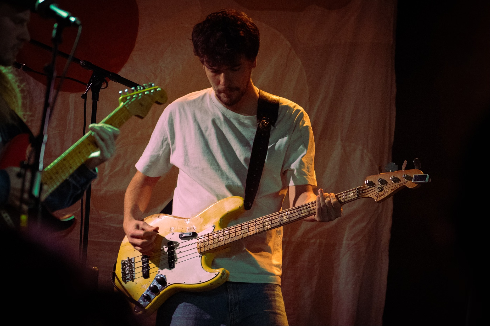

"Radar er uden tvivl det mest intime koncertsted, jeg har oplevet i Aarhus. Jeg var til en koncert med en upcoming indie-artist, og lyden var så klar, at det føltes som at stå i kunstnerens studie. Stemningen var så intens og nærværende, at jeg stadig får gåsehud, når jeg tænker tilbage på det!"



Mit Radar - Del din oplevelse
Astrid fortæller, 33 - Århus C
Jonas fortæller, 28 - Århus V
""Jeg havde fornøjelsen af at opleve en elektronisk aften på Radar, og det var som at blive taget med på en musikalsk rejse. Lysshowet supplerede musikken perfekt, og selvom stedet er lille, gav det bare følelsen af at være en del af noget eksklusivt. Det var en oplevelse, der ramte alle sanser!"
Mads fortæller, 34 - Århus C
"Radar overraskede mig virkelig. Jeg tog spontant til en jazzkoncert, og stedet emmer af kreativitet og autenticitet. Musikerne kom tæt på publikum, og det hele føltes meget uformelt og hyggeligt. Dog kunne der godt have været lidt flere siddepladser til os, der ikke er vant til at stå i flere timer."